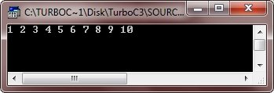
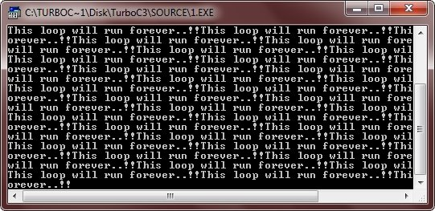
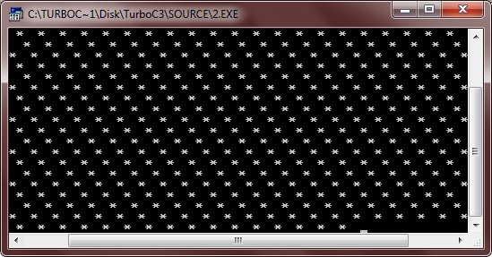
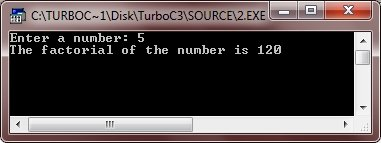
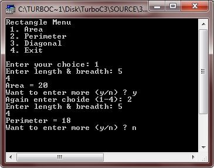
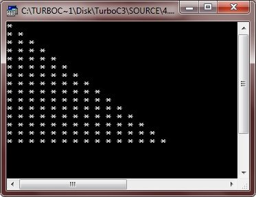
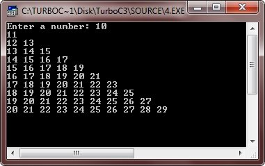

The iteration (for, while, and do-while loop) statements allows a set of instruction to
be performed repeatedly until a certain condition is fulfilled. The iteration statements
are also called loops or looping statements. C++ provides three kinds of loops :
• for loop
• while loop
• do-while loop
All three loop constructs of C++ repeat a set of statements as long as a specified
condition remains true. This specified condition is generally referred to as a loop
control. For all three loop statements, a true condition is any nonzero value. A zero
value indicates a false condition.
Every loops has its elements that control and govern its execution. Generally, a loop
has four elements that have different purposes. These elements are as :
• iInitialization Expression(s)
• Test Expression
• Update Expression(s)
• Loop's Body
Let's discuss these parts of a loop one by one
Before entering in a loop, its control variable(s) must be initialized. The initialization of the control variable(s) takes place under initialization expression(s). The initialization expression(s) give(s) the loop variable(s) their first value(s). The initialization expression(s) is executed only once, in the beginning of the loop.
The test expression is an expression whose truth value decides whether the loop-body will be executed or not. If the test expression evaluates to true i.e., 1, the loop-body gets executed, otherwise the loop is terminated.
In an entry-controlled loop, the test-expression is evaluated before exiting from the loop. In C++, the for loop and while loop are entry-controlled loops and do-while loop is exit-controlled loop.
The update expression(s) change the value(s) of loop variable(s). The update expression(s) is executed; at the end of the loop after the loop-body is executed.
The statements that are executed repeatedly (as long as the test-expression is nonzero) from the body of the loop. In an entry-controlled loop, first test-expression is evaluated and if it is nonzero, the body-of-the-loop is executed; if the test-expression evaluates to be zero, the loop is terminated. In an exit-controlled loop, the body-of-the-loop is executed first and then the test-expression is evaluated. If it evaluates to be zero, the loop is terminated otherwise repeated. Now let's discuss the C++ loops: for, while and do-while.
The for loop is the easiest to understand of the C++ loops. All its loop-control elements are gathered in one place (on the top of the loop), while in the other loop construction of C++, they (top-control elements) are scattered about the program.
The general form (syntax) of the for loop statement is :
The following example program illustrates the use of for statement :
When the above program is compile and executed, it will produce the following output:
The following lines explain the working of the above given for loop program :
• Firstly, initialization expression is executed, i.e., i=1 which gives the first
value 1 to variable i.
• Then, the test expression is evaluated i.e., i <= 10 which results into true i.e.,
1.
• Since, the test expression is true, the body-of-the-loop i.e., cout << i
<< " " ; is executed which prints the current value of i then a single
space.
• After executing the loop-body, the update expression i.e., i++ is executed
which
increments the value of i. (After first execution of the loop, the value of
i becomes
2 after the execution of i++, since initially i was 1).
• AFter the update expression is executed, the test-expression is again
evaluated. If it is true the sequence is repeated from the step no 3,
otherwise the loop terminates.
Note - Use for loop when you have to repeat a block of statements
specific number of times.
Although any loop statement can be used to create an infinite loop (endless loop) yet for is traditionally used for this purpose. An infinite for loop can be created by omitting the test-expression as shown below :
Similarly, the following for loop is also an infinite loop :
Here is an example of infinite loop in C++
When the conditional expression is absent, it is assumed to be true. You may have an initialization and increment expression, but C++ programmers more commonly use the for(;;) construct to signify an infinite loop. If you try to run the above C++ program, then the output window will come out like this, printing continuously
Note - You can terminate an infinite loop by pressing Ctrl+C keys. Let's take another program, prints stars infinite times
After running this C++ program, output window will look like this, printing stars infinite times:
If a loop does not contain any statement in its loop-body, it is said to be an empty loop. In such cases, a C++ loop contains an empty statement i.e., a null statement. Following for loop is an empty loop:
See, the body of the above for loop contains just (a null statement). It is an empty
loop. An empty for loop has its applications in pointer manipulations where you need
to increment or decrement pointer position without doing anything else.
Time delay loops are often used in programs. The following code shows how to create
one by using for :
That means if you put a semicolon after for's parenthesis it repeats only for counting the control variable. And if put a block of statements after such a loop, then it is not part of for loop. For example, consider the following :
The semicolon after the for loop ends the loop there only. And then, the below i.e, is not body of the for loop.
The second loop available in C++ is the while loop. The while loop is an empty-controlled loop.
Following is the syntax of the while loop :
where the loop-body may contain a single statement, a compound statement or an empty
statement. The loop iterates while the expression evaluates to true. When the
expression becomes false, the program control passes to the line after the loop-body
code.
In a while loop, a loop control variable should be initialized before the loop
begins as an uninitialized variable can be used in the expression. The loop variable
should be updated inside the body-of-the-while.
Following example program illustrates the working of a while loop :
When the above program compile and executed, it will produce the following output:
The above program inputs an integer num. Then as long as num is nonzero (according to while (num)) the loop-body iterates i.e., fact is multiplied with num and the result is stored back in fact, followed by the decrement of num. Again the test-expression (num) is evaluated : if it is true, the loop repeated otherwise terminated.
Unlike the for and while loops, the do-while is an exit-controlled loop i.e., it
evaluates its test-expression at the bottom of the loop after executing its
loop-body statements. This means that a do-while loop always executes at least once.
In the other two loops for and while, the test-expression is evaluated at the
beginning of the loop i.e., before executing the loop-body. If the test-expression
evaluates to false for the first time itself, the loop is never executed. But in
some situations, it is wanted that the loop-body is executed at least once, no
matter what the initial state of the test-expression is. In such cases, the do-while
loop is the obvious choice.
The syntax of the do-while loop is:
The braces { } are not necessary when the loop-body contains a single statement. The following do-while loop prints all upper-case letters :
The above code prints characters from 'A' onwards until the condition ch <= 'Z' becomes false.
The most common use of the do-while loop is in menu selection routine, where
the menu is flashed at least once. Then depending upon the user's response
it is either repeated or terminated.
The following example program is a menu selection program. Following program
display a menu regarding rectangle operations and perform according to the
user's response :
When the above program is compile and executed, it will produce the following output:
A loop may contain another loop in its body. This form of a loop is called nested loop. But in a nested loop, the inner loop must terminate before the outer loop. The following is an example of a nested loop.
When the above program is compile and executed it will produce the following output:
Here is one more program, demonstrating nested loop in C++
Below is the sample run of the above C++ program:
